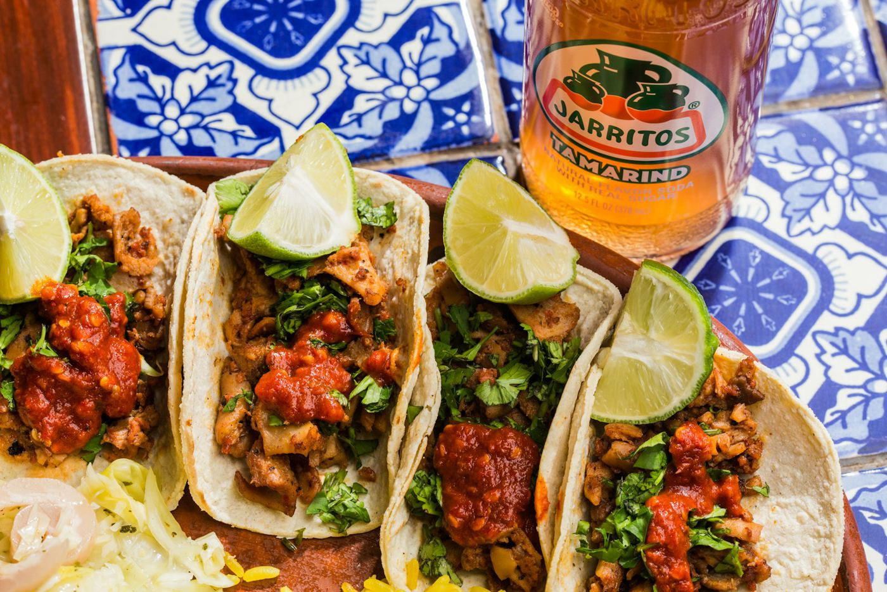
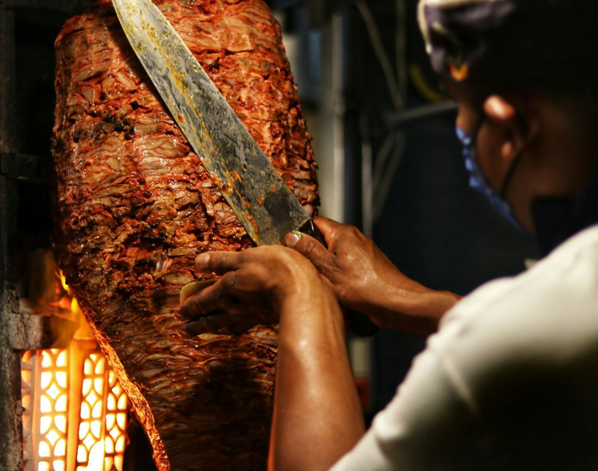
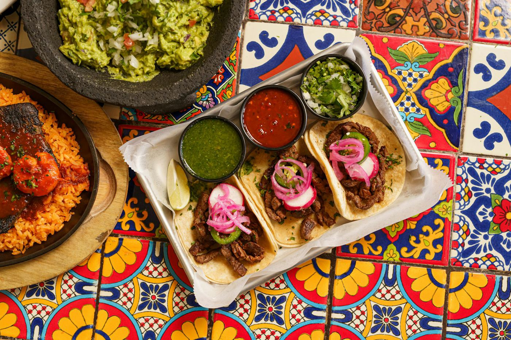
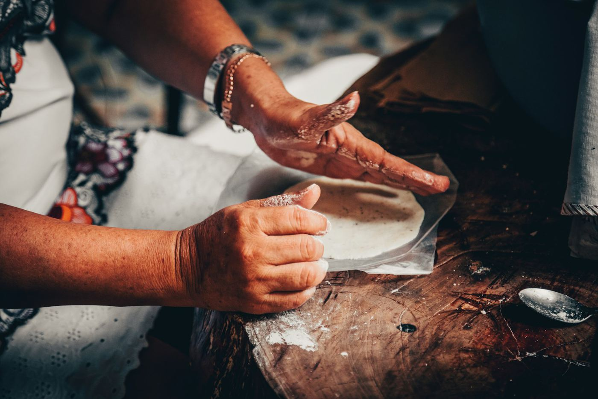
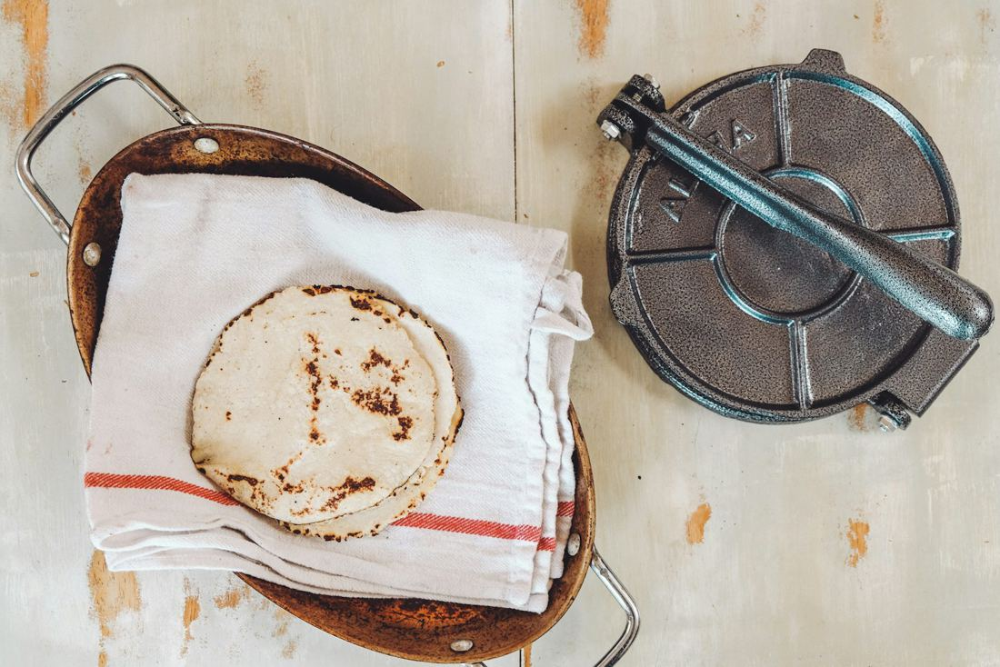
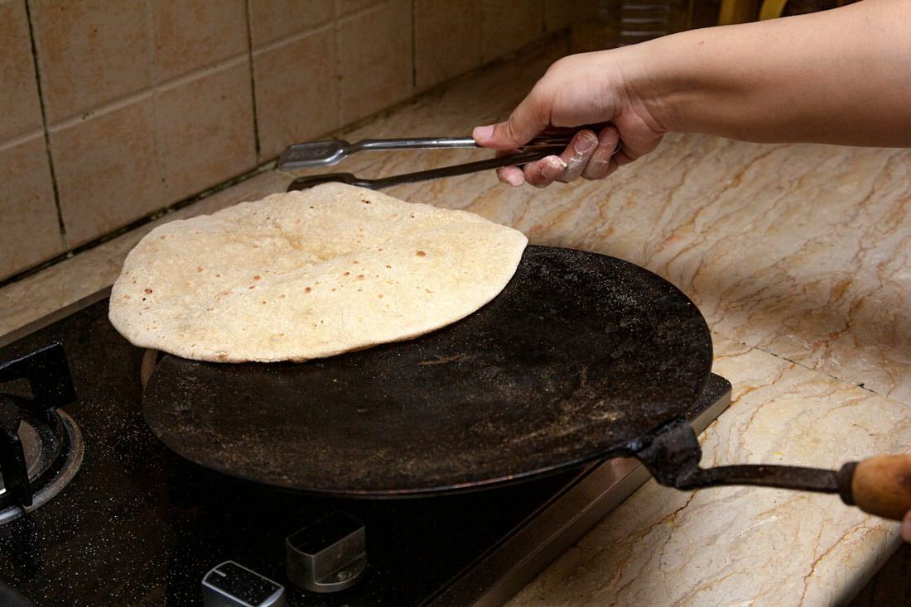
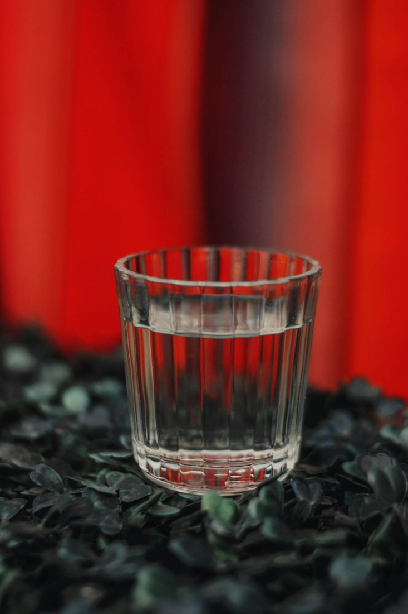
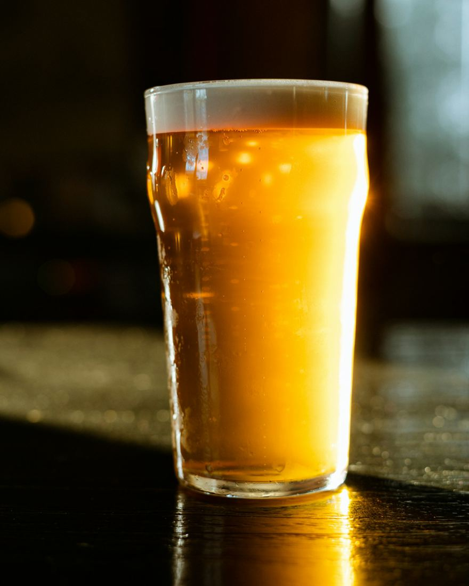
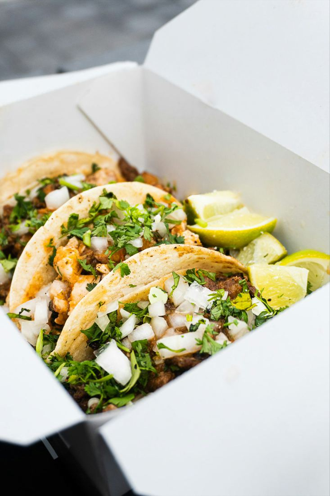
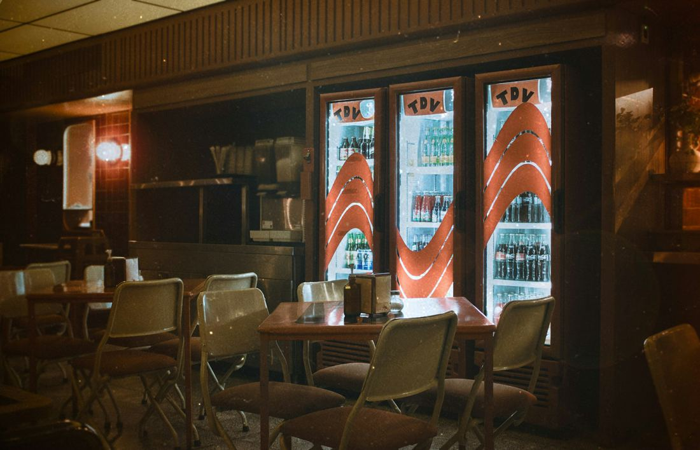

Al Pastor
アル・パストール
豚の肩ロースを唐辛子とパイナップルの汁に一晩漬け、縦に積み上げて焼きます。注文が入るたびに外側を削ぐので、焦げた端と柔らかい中が両方入る。迷ったらまずこれを。
500円
タケリア・チスパ 学芸大学駅 東口から徒歩2分のタコス屋
タコスは1ピース450円から。昼はプレートで、夜はクラフトビールとメスカルと一緒に。持ち帰りもできます。




メキシコ産の白トウモロコシを、石灰を溶かした湯で煮て一晩おきます。朝7時に石臼で挽いて生地に。この工程を省いた粉のトルティーヤとは、香りがまるで違います。
生地は1枚38gずつ丸め、手押しのプレスで伸ばして鉄板で焼きます。焼き置きはしません。注文を受けてからもう一度温め、具を包みます。
17:30からはお酒の時間。タコスは1ピースずつ追加できるので、つまみながら長居してください。

オアハカの小さな蒸留所のものを中心に7種。最初の1杯は、オレンジと唐辛子塩を添えてショットで。煙のような香りがタコスの脂を流してくれます。

国内のブルワリーから4種をつなぎ、毎週1つずつ入れ替えます。タコスに合わせるなら、苦みの少ないメキシカンラガーがいちばん。
ハマイカ ハイビスカスの冷たいお茶 450円オルチャータ 米とシナモンの甘い飲みもの 500円
お店で食べるのと同じタコスを、1ピースから包みます。10ピース以上は前日までにお電話ください。
03-0000-0000 へ。品名と数、受け取りたい時間を伝えてください。受付は11:00〜22:00です。
トルティーヤは注文を受けてから温めます。12時台は混むので、25分ほど見ておいてください。
入口右の「PARA LLEVAR」の窓口へ。現金・カード・QR決済が使えます。
サルサは別の容器に入れてあります。冷めたらフライパンで片面30秒ずつ温め直すと、焼きたてに近づきます。


ベビーカーのまま入れます。お子さん用の小さなタコス（1ピース300円）もあります。
カウンター8席とテーブル16席。夜のテーブル席だけ、お電話で予約を受けています。
| 月 | 火 | 水 | 木 | 金 | 土 | 日 | |
|---|---|---|---|---|---|---|---|
| 昼 | 11:30 15:00 | 休 | 11:30 15:00 | 11:30 15:00 | 11:30 15:00 | 11:30 15:00 | 11:30 15:00 |
| 夜 | 17:30 23:00 | 休 | 17:30 23:00 | 17:30 23:00 | 17:30 23:00 | 17:30 23:00 | 17:30 22:00 |
架空の店のデザイン見本です（制作：プラチナ企画）